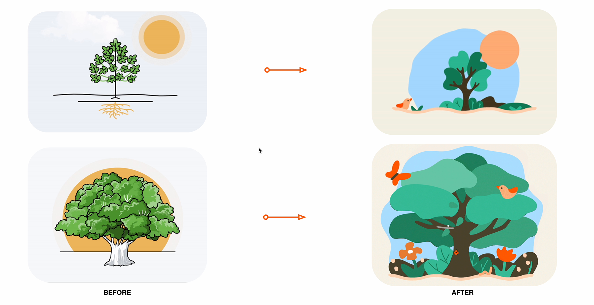
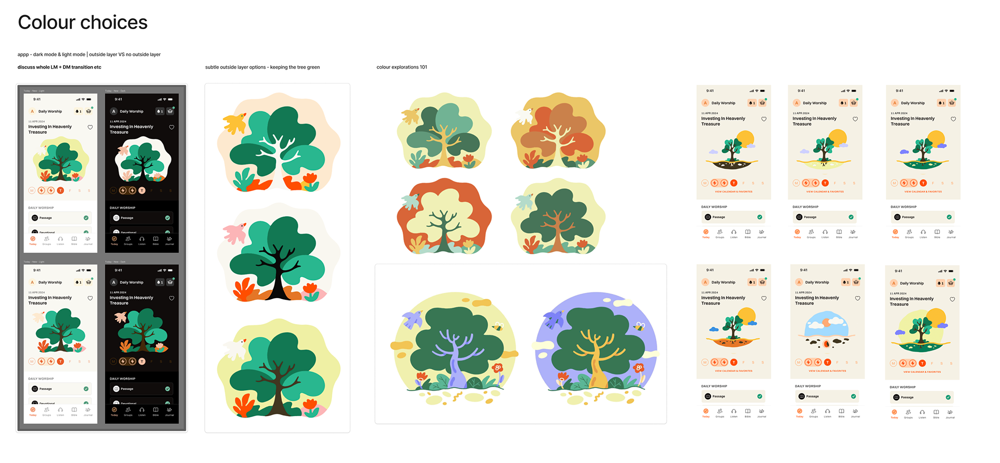
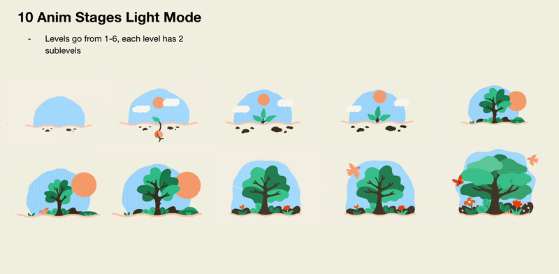
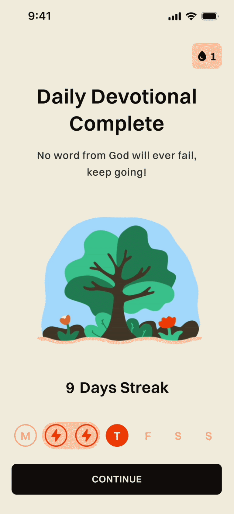
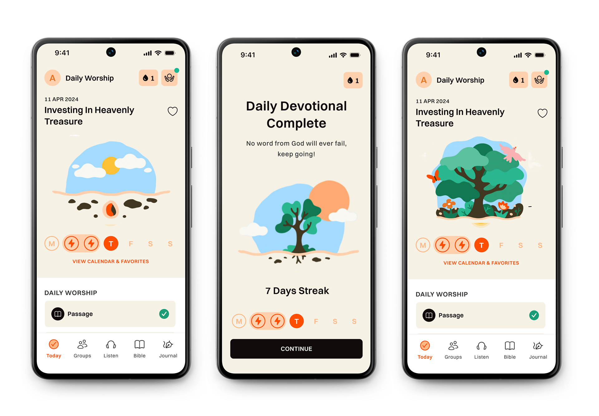

The Tree of Faith is a core part of Glorify's app experience. A daily animation that grows with the user over time, from a buried seed to a full flourishing tree. Each log-in adds a stage. Faith, like a tree, grows when you show up every day.
The challenge was making a gamification mechanic feel genuinely spiritual rather than gimmicky. It had to earn its place inside a meditation app.



Glorify had just rebranded. The original Tree of Faith screens were flat line illustrations with no warmth and no motion. The brief was to redesign the feature from the ground up, grounded in the new visual identity, and make it feel like a gentle reward rather than a gimmick.
Ten illustration stages were designed to carry users from a single seed to a flourishing tree. Collaborating with illustrator Clara Candelot, we built a warm, rounded world with soft greens, peach tones, and sky blue so every milestone felt calm, hopeful, and spiritually meaningful.
- 10 distinct stages so users feel measurable progress
- Colour system tested across light and dark mode
- Animation designed to feel like a reward, not a distraction


The Tree of Faith became one of Glorify's most recognised UI moments. A small daily ritual that keeps users coming back.